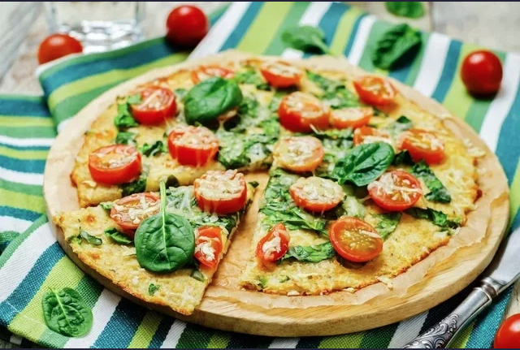

An 80-gram serving (1/4 tortilla) of this spinach tortilla provides 107 calories, 4 g protein, 9 g fat, and 2.5 g carbohydrates.
Ingredients
550 grams of spinach or chard leaves.
4 egg whites lightly beaten.
1/2 onion, diced.
1 tablespoon chives.
A pinch of salt and pepper.
Olive oil.
preparation mode
Place the spinach leaves in a skillet, cover and keep over medium heat until cooked through and wilted. Uncover and stir from time to time. Once they are ready remove from heat and let rest.
In another pan place the olive oil and add the onion, chives, salt and pepper to brown. Add the egg and spinach and cook for 5 minutes until golden on the bottom. Flip the tortilla and cook for 5 more minutes.
Pizza low carb de coliflor

Low-carb pizza with more cauliflower is an excellent option for a healthy snack or dinner, because it is rich in fiber, vitamins, and minerals. Also, one slice provides about 150 calories.
Ingredients to prepare the dough
400 grams of cauliflower.
1 egg.
25 grams of mozzarella cheese.
25 grams of grated Parmesan cheese.
Salt to taste (optional).
Ingredients for the pizza (to taste).
IMozzarella cheese.
ITomato paste.
ICorn.
ISliced cherry tomatoes.
I sliced olives.
I arugula.
I Pepper and oregano to taste.
Zucchini Spaghetti
A 100-gram serving of this pasta provides 59 calories, 1.1 g protein, 5 g fat and 3 g carbohydrates.
Ingredients
1 small courgette cut into thin strips;
1 teaspoon of coconut oil or olive oil;
Sea salt and ground pepper to taste.
Preparation mode
Cut the zucchini lengthwise (like spaghetti) or you can also use the special cutters that cut the vegetables in the shape of spaghetti. In a frying pan, heat the coconut oil or olive oil and place the courgette strips. Saute for 5 minutes or until zucchini begins to soften. Season with salt, garlic and pepper. Remove from the burner and add the desired meat and the natural tomato sauce or pesto sauce.
Chia pudding, coffee and chocolate.
A 100-gram serving of this pasta provides 59 calories, 1.1 g protein, 5 g fat and 3 g carbohydrates.
Ingredients
For 2 persons
Coffee 125ml
Dark chocolate 30 gr
Milk 125ml
Honey 40 gr
Chia seeds 50 gr
Hazelnuts (optional) 40 gr
Sugar (optional) 25 gr
Preparation mode
How to make chia, coffee and chocolate pudding
Difficulty: Easy
Total time 15 min
Elaboration 15m
We prepare the coffee in the way that we like the most. At home we drink it natural and prepared in an Italian coffee maker, but you can use soluble coffee, another type of coffee maker, decaffeinated, etc. The important thing is to obtain the amount of coffee necessary for the elaboration. The rest we leave to your taste and choice.
Grate the chocolate and mix it with the coffee, milk and honey. Add the chia seeds and stir well until smooth. We will obtain a very liquid mixture, but this will thicken with the rest. Put the mixture in the fridge and let cool for a minimum of 2 hours. After this time the base of our pudding will be ready.
If we want to serve the pudding as a dessert, we can prepare some caramelized hazelnuts. In a small pan, heat the sugar over medium heat and add the peeled hazelnuts when it begins to caramelize. We remove so that they are covered with caramel on all sides and let cool on parchment paper before using to decorate.
Chia pudding, coffee and chocolate.
Without the dates, honey, raisins and dehydrated coconut, and substituting natural cream cheese for yogurt, we will have a high-fat dessert that combines several textures.
Ingredients
For 4 persons
Chia seeds (4 tablespoons) 40 gr
Dates 4
Coconut water 200ml
Coconut milk 200ml
Hazelnuts 16
Sultana raisins
Natural sweetened yogurt 125 gr
Laminated dehydrated coconut (optional)
Pure honey (optional)
Preparation mode
How to make chia, coconut and dried fruit pudding
Difficulty: Medium
Total time 10 min
Rest 2 hours
Soak the dates in warm water for 30 minutes. Drain them, remove the bones and chop finely. We place them in the glass of a blender, add the coconut water and grind well.
Add the coconut milk, half the yogurt and beat with a whisk until you get a homogeneous mixture. Finally, we add a handful of sultanas and chia seeds. Stir well and let the mixture rest for a minimum of two hours in the fridge.
At the time of serving, stir the mixture and, if it is too thick, add a little milk. We distribute the mixture between four small glasses, with a teaspoon of yogurt on top, the hazelnuts (chopped or not according to our taste) and a few sultanas. We can also add a little honey, if we like it sweeter, and decorate with dehydrated coconut.

.png)

.png?alt=media&token=6a13725a-8687-4f69-9c45-37b80f3bd285)